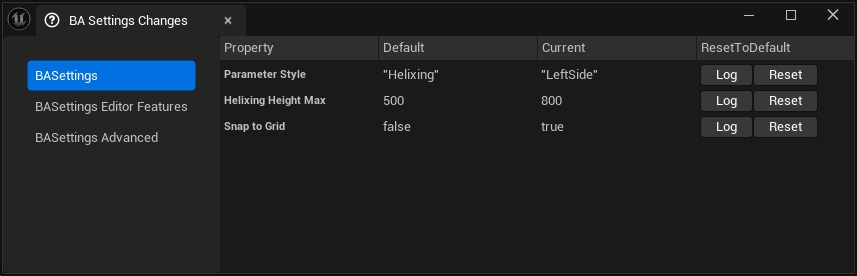

Settings
Blueprint Assist Settings
To reset the plugin settings:
- Open the BA Settings Change window
Tools > BA Settings Change - Click reset button on the right
Setting sections
There are 3 tabs on the left for each of the plugin's setting section

General
AddToolbarWidget
-
Add the BlueprintAssist widget to the toolbar
-
Change the color of the border around the selected pin
EnableGlobalCommentBubblePinned;
- Sets the 'Comment Bubble Pinned' bool for all nodes on the graph (Auto Size Comment plugin handles this value for comments)
bGlobalCommentBubblePinnedValue;
- The global 'Comment Bubble Pinned' value
AutoAddParentNode
- Automatically add parent nodes to event nodes
AutoRenameGettersAndSetters;
- Automatically rename Function getters and setters when the Function is renamed
MergeGenerateGetterAndSetterButton;
- Merge the generate getter and setter into one button
ShiftCameraDistance;
- Distance the viewport moves when running the
Shift Cameracommand
SlowButAccurateSizeCaching;
- Enable more slower but more accurate node size caching
CacheSaveLocation
- Where to save the cache file
- Plugin:
PluginFolder/NodeSizeCache/PROJECT_ID.json - Project:
ProjectFolder/Saved/BlueprintAssist/BlueprintAssistCache.json
- Plugin:
SaveBlueprintAssistCacheToFile;
- Whether to save the node size cache to the CacheSaveLocation
AutoZoomToNodeBehavior
- Determines when to auto zoom to a newly created node
- Never
- Always
- Outside viewport (default)
SupportedAssetEditors (advanced)
- List of supported asset editors by name (if an asset editor is not here it will be ignored by the plugin)
SupportedGraphEditors (advanced)
- List of supported graph editors by name (if a graph editor is not here it will be ignored by the plugin)
Formatting Options
bool bGloballyDisableAutoFormatting;
- Enabling this is the same as setting auto formatting to Never for all graphs
FormattingStyle
- Determines how execution nodes are positioned
Expanded (default): Nodes are pushed ahead of the previous executing nodeCompact: Nodes are positioned disregarding execution
ParameterStyle
- Determines how parameters are positioned
Helixing (default): Stacked downwards. If the node has multiple linked parameters, it will switch to left sideLeftSide: Positioned to the left of the node
ExecutionWiringStyle;
- Determines how reroute tracks are created for execution wires
Always Merge: If there are multiple tracks to a pin, always merge them to oneMerge When Near: If there are multiple tracks to a pin, merge if they are nearSingle Wire: Never merge tracks
ParameterWiringStyle
- Determines how parameter wires are created (same as above)
bool bUseKnotNodePool;
- Reuse knot nodes instead of creating new ones every time
bool bLimitHelixingHeight;
- Whether to use HelixingHeightMax and SingleNodeMaxHeight
float HelixingHeightMax;
- Helixing is disabled if the total height of the parameter nodes is larger than this value
float SingleNodeMaxHeight;
- Helixing is disabled if a single node is taller than this value
bool bDetectNewNodesAndCacheNodeSizes;
- Cache node sizes of any newly detected nodes. Checks upon opening a blueprint or when a new node is added to the graph.
bool bRefreshNodeSizeBeforeFormatting;
- Refresh node sizes before formatting
bool bCreateKnotNodes;
- Create knot nodes
bool bExpandNodesAheadOfParameters;
- Add spacing to nodes so they are always in front of their input parameters
bool bExpandNodesByHeight;
- Add spacing to nodes which have many connections, fixing hard to read wires
bool bExpandParametersByHeight;
- Add spacing to parameter nodes which have many connections, fixing hard to read wires
bool bSnapToGrid;
- Snap nodes to grid (in the x-axis) after formatting
Format All
EBAFormatAllStyle FormatAllStyle;
- Determines how nodes are positioned into columns when running formatting all nodes
Simple: Format blocks in a single columnSmart: Format blocks by create columns from block x-positionNode Type: Format blocks by creating columns based on the root node type (e.g Input Nodes, Event Nodes, Default Event Nodes)
EBAFormatAllHorizontalAlignment FormatAllHorizontalAlignment;
- Determines how nodes are aligned horizontally
Root Node: Align the left-side of the node tree's root nodeComment: Align the left-side of any containing comments
FVector2D FormatAllPadding;
- x values defines padding between columns, y value defines horizontal padding between node trees
bool bAutoPositionEventNodes
- Call the format all function when a new event node is added to the graph
bool bAlwaysFormatAll
- Call the format all function when ANY new node is added to the graph. Useful for when the 'UseColumnsForFormatAll' setting is on.
Blueprint formatting
Blueprint Formatter Settings
FVector2D BlueprintParameterPadding;
- Padding used between parameter nodes
FBAKnotTrackSettings BlueprintExecutionKnotSettings;
- Offsets for execution knot tracks
FBAKnotTrackSettings BlueprintParameterKnotSettings;
- Offsets for parameter knot tracks
TArray UseBlueprintFormattingForTheseGraphs;
- Blueprint formatting will be used for these types of graphs (you can see the type of a graph with the PrintGraphInfo command, default: unbound)
bool bTreatDelegatesAsExecutionPins;
- When formatting treat delegate pins as execution pins, recommended to turn this option off and use the 'CreateEvent' node
bool bCenterBranches;
- Center node execution branches (Default: center nodes with 3 or more branches)
int NumRequiredBranches;
- Only center branches if we have this (or more) number of branches
bool bCenterBranchesForParameters;
- Center parameters nodes with multiple links
int NumRequiredBranchesForParameters;
- Only center parameters which have this many (or more) number of links
float VerticalPinSpacing;
- Vertical spacing from the last linked pin
float ParameterVerticalPinSpacing;
- Vertical spacing from the last linked pin for parameters
float BlueprintKnotTrackSpacing;
- Spacing used between wire tracks
float KnotNodeDistanceThreshold;
- The width between pins required for a knot node to be created
Other Graphs
NonBlueprintFormatterSettings;
Comment Settings
bool bApplyCommentPadding;
- Apply comment padding when formatting
bool bAddKnotNodesToComments;
- Add knot nodes to comments after formatting
FVector2D CommentNodePadding;
- Padding around the comment box. Make sure this is the same as in the AutoSizeComments setting
Create Variable defaults
bool bEnableVariableDefaults;
- Enable Variable defaults
bool bApplyVariableDefaultsToEventDispatchers;
bool bDefaultVariableInstanceEditable;
- Variable default Instance Editable
bool bDefaultVariableBlueprintReadOnly;
- Variable default Blueprint Read Only
bool bDefaultVariableExposeOnSpawn;
- Variable default Expose on Spawn
bool bDefaultVariablePrivate;
- Variable default Private
bool bDefaultVariableExposeToCinematics;
- Variable default Expose to Cinematics
FString DefaultVariableName;
- Variable default name
FText DefaultVariableTooltip;
- Variable default Tooltip
FText DefaultVariableCategory;
- Variable default Category
Create function defaults
bool bEnableFunctionDefaults;
- Enable Function defaults
EBAFunctionAccessSpecifier DefaultFunctionAccessSpecifier;
- Function default AccessSpecifier
bool bDefaultFunctionPure;
- Function default Pure
bool bDefaultFunctionConst;
- Function default Const
bool bDefaultFunctionExec;
- Function default Exec
FText DefaultFunctionTooltip;
- Function default Tooltip
FText DefaultFunctionKeywords;
- Function default Keywords
FText DefaultFunctionCategory;
- Function default Category
Misc
bool bDisableBlueprintAssistPlugin; - Disable the plugin (requires restarting engine)
FText DefaultGeneratedGettersCategory;
- What category to assign to generated getter functions. Overrides DefaultFunctionCategory.
FText DefaultGeneratedSettersCategory;
- What category to assign to generated setter functions. Overrides DefaultFunctionCategory.
bool bEnableDoubleClickGoToDefinition;
- Double click on a node to go to definition. Currently only implemented for Cast blueprint node.
bool bEnableInvisibleKnotNodes;
- Enable invisible knot nodes (re-open any open graphs)
bool bPlayLiveCompileSound;
- Play compile sound on successful live compile (may need to restart editor)
TArray FolderBookmarks;
- Input for folder bookmarks
float ClickTime;
- Duration to differentiate between a click and a drag
bool bHighlightBadComments;
- Draw a red border around bad comment nodes after formatting
TArray BlueprintAssistDebug;
- Ignore this (setting for custom debugging)
Blueprint Assist Settings Editor Features
CustomEventReplication
bool bSetReplicationFlagsAfterRenaming;
- Set the according replication flags after renaming a custom event by matching the prefixes below
bool bClearReplicationFlagsWhenRenamingWithNoPrefix;
- When enabled, renaming a custom event with no matching prefix will apply "NotReplicated"
bool bAddReplicationPrefixToCustomEventTitle;
- Add the according prefix to the title after changing replication flags
FString MulticastPrefix;
FString ServerPrefix;
FString ClientPrefix;
Node group
bool bDrawNodeGroupOutline;
- Draw an outline to visualise each node group on the graph
bool bOnlyDrawGroupOutlineWhenSelected;
- Only draw the group outline when selected
FLinearColor NodeGroupOutlineColor;
- Change the color of the border around the selected pin
float NodeGroupOutlineWidth;
- Change the color of the border around the selected pin
FMargin NodeGroupOutlineMargin;
- Outline margin around each node
bool bDrawNodeGroupFill;
- Draw a fill to show the node groups for selected nodes
FLinearColor NodeGroupFillColor;
- Change the color of the border around the selected pin
Mouse Features
TArray AdditionalDragNodesChords;
- Extra input chords to for dragging selected nodes with cursor (same as left-click-dragging)
TArray GroupMovementChords;
- Input chords for group dragging (move all linked nodes)
TArray LeftSubTreeMovementChords;
- Input chords for group dragging (move left linked nodes)
TArray RightSubTreeMovementChords;
- Input chords for group dragging (move right linked nodes)
General
FInputChord InsertNewNodeKeyChord;
- Try to insert the node between any current wires when holding down this key
bool bAlwaysConnectExecutionFromParameter;
- When creating a new node from a parameter pin, always try to connect the execution. Holding InsertNewNodeChord will disable this.
bool bAlwaysInsertFromParameter;
- When creating a new node from a parameter pin, always try to insert between wires. Holding InsertNewNodeChord will disable this.
bool bAlwaysInsertFromExecution;
- When creating a new node from an execution pin, always try to insert between wires. Holding InsertNewNodeChord will disable this.
Blueprint Assist Settings Advanced
bool bRemoveLoopingCausedBySwapping;
- If swapping produced any looping wires, remove them
TSet DisabledCommands;
bool bEnableMaterialGraphPinHoverFix;
- Potential issue where pins can get stuck in a hovered state on the material graph
bool bGenerateUniqueGUIDForMaterialExpressions;
- Fix for issue where copy-pasting material nodes will result in their material expressions having the same GUID
bool bStoreCacheDataInPackageMetaData;
- Instead of making a json file to store cache data, store it in the blueprint's package meta data
bool bPrettyPrintCacheJSON;
- Save cache file JSON in a more human-readable format. Useful for debugging, but increases size of cache files.
bool bUseCustomBlueprintActionMenu;
- Use a custom blueprint action menu for creating nodes (very prototype, not supported in 5.0 or earlier)
bool bForceRefreshGraphAfterFormatting;
- Hacky workaround to ensure that default comment nodes will be correctly resized after formatting
Other
FBAFormatterSettings struct
This struct is used to describe generic formatting information for a graph type. See Other graphs and BlueprintFormatterSettings
bool bEnabled = true
- Setting to enable / disable all behaviour for this graph type
EBAFormatterType FormatterType = EBAFormatterType::Simple;
- Formatter to use
Blueprint: Only applicable to Blueprint type graphsBehaviorTree: Any behavior tree-like graphsSimple: A generic formatter (make sure to correctly set the formatter direction, exec pin name), see support for custom graphs
FVector2D Padding = FVector2D(100, 100);
- Padding used when formatting nodes
EBAAutoFormatting AutoFormatting = EBAAutoFormatting::FormatAllConnected;
- Auto formatting method to be used for this graph
TEnumAsByte FormatterDirection;
- Direction of execution flow in this graph
TArray RootNodes;
- Names of any root nodes that this graph uses
FName ExecPinName;
- Name of the execution pin for this graph type